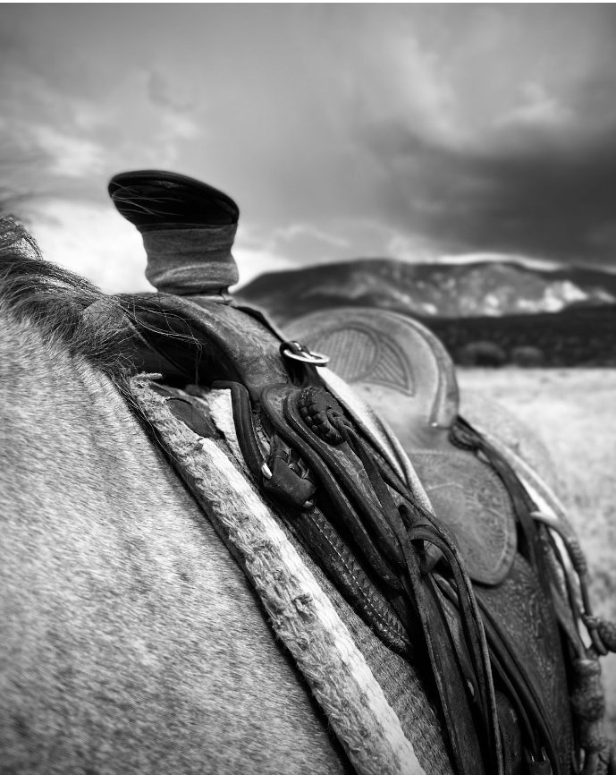

Case Study · Organic Social · Paid Meta Ads · Growth Strategy
Rising K Ranch offered unforgettable horseback riding tours in the mountains of Cedar City, Utah. What they didn't have was an audience. Over 12 months, I built their social presence from the ground up and ran the paid campaigns that turned followers into paying guests.
150%
Overall visibility boost
80%
Increase in direct bookings
12 mo.
Full-year engagement
The Challenge
Rising K Ranch sat in some of the most stunning terrain in Southern Utah — dramatic mountain backdrops, wide open land, and the kind of authentic western experience that travel content dreams are made of. The problem? No one knew they were there. Their digital presence was minimal, their social following was sparse, and direct bookings weren't reflecting the quality of what they offered.
They needed someone who could translate that real-world magic into content that stopped people mid-scroll — and then convert that attention into reservations.
The Approach
Experience-driven businesses live and die by their content. You can't sell a horseback ride through the mountains with generic stock photography and templated captions. I built a social strategy rooted in authenticity — real moments, real terrain, real horses — and paired it with targeted paid campaigns to put that content in front of the right audience.
01 · Organic Social
Brand storytelling on social
Built and managed Rising K Ranch's organic social presence — developing a consistent content voice, cadence, and visual identity that authentically represented the western experience they offered.
02 · Paid Media
Targeted Meta advertising
Ran Facebook and Instagram paid campaigns targeting adventure travelers, equine enthusiasts, and Southern Utah tourists — optimizing audiences and creative based on performance data throughout the engagement.
03 · Creative
Graphic design & visual assets
Designed on-brand graphics and visual content that elevated the ranch's presence and maintained a cohesive, polished look across all digital touchpoints.
04 · Strategy
Full-year growth management
Managed the full digital marketing operation over 12 months — iterating on what worked, doubling down on high-performing content, and aligning campaigns with seasonal booking patterns.
The photo above was taken during this engagement — a glimpse of the authentic western world I helped bring to a digital audience.
The Results
Over twelve months, Rising K Ranch went from a hidden gem to a booked-out experience business. The combination of organic storytelling and targeted paid advertising created a compounding effect — social proof built the brand, paid ads drove the conversions.
Ready to turn your experience
into a fully booked one?
Let's build the content and campaigns that fill your calendar.
Work With Me →